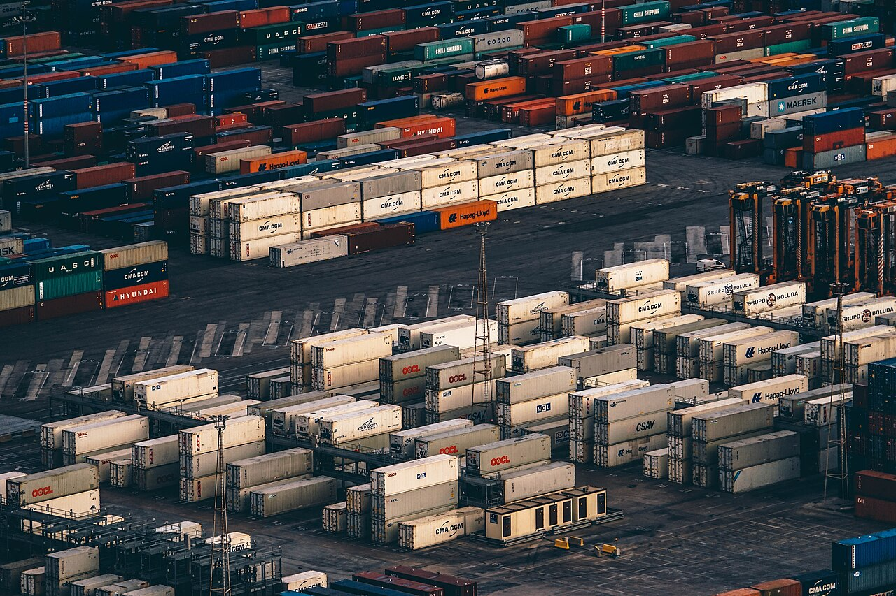
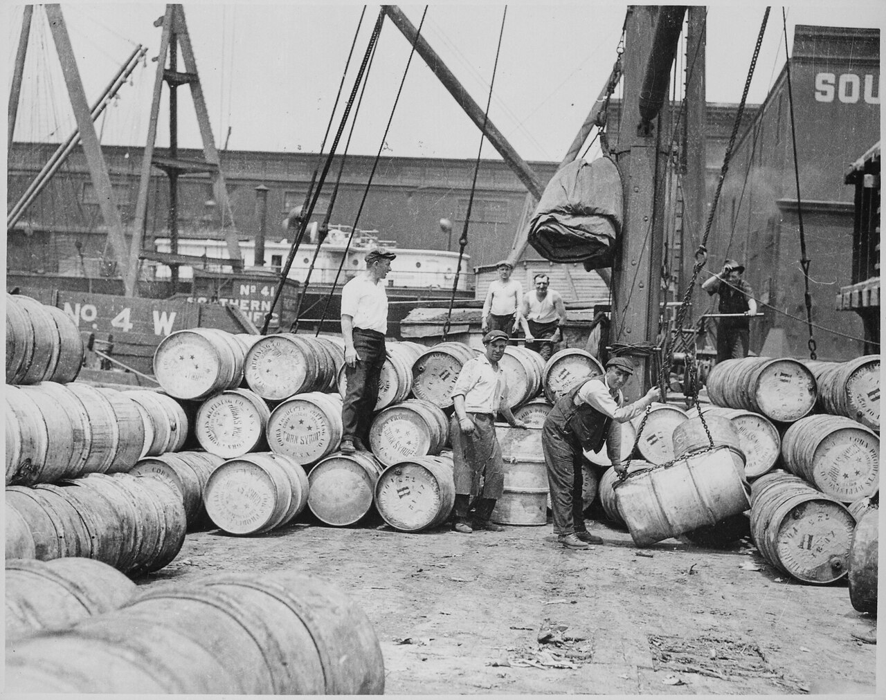
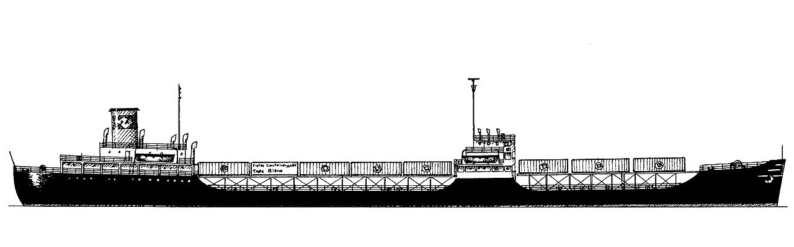
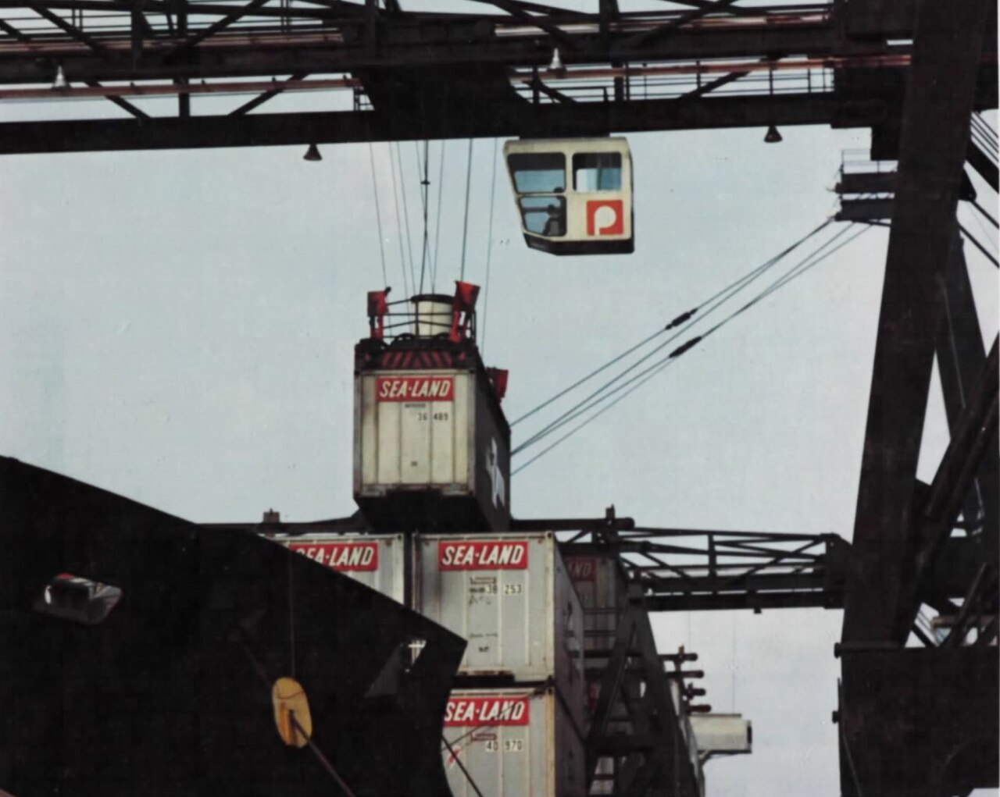
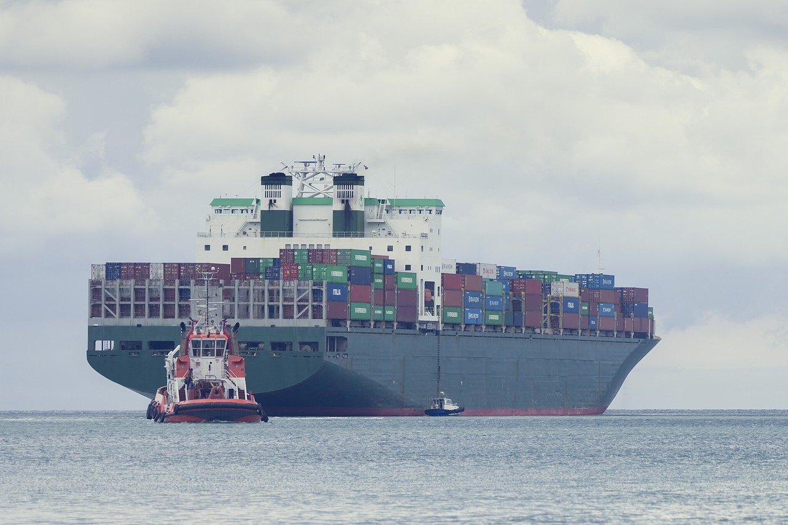
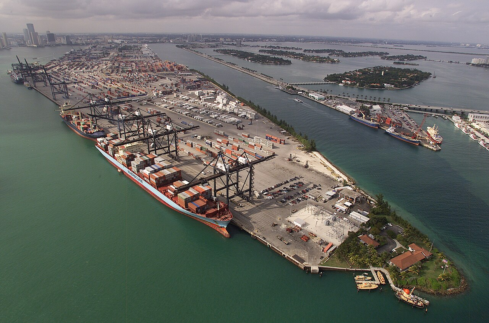
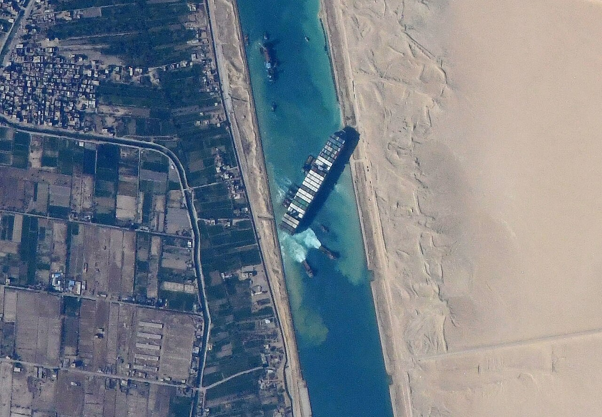

技術・発明 Technology世界の荷物は、どうやって運ばれている？
服も家電も食べ物も、その多くは海の向こうからやってきます。運んでいるのは、大きさをそろえた鉄の箱と、巨大な船。箱の寸法の図、船の大きさくらべ、航路の地図で、荷物の長い旅をたどってみませんか。
2026.10.24 UP 約5分で読める 文：SOMOSOMO編集部
写真：Igor Ovsyannykov（2016年、CC0）
アメリカ東部、ニュージャージー州のニューアーク港。1956年4月26日、古い石油タンカーを改造した船「アイデアルX」号に、58個の大きな鉄の箱が積まれました。行き先は、南へ遠く離れたテキサス州のヒューストン。向こうの港では、箱を受け取る58台のトラックが待っていました。
この「箱ごと運ぶ」船旅から、70年。国連貿易開発会議（UNCTAD）によると、国と国のあいだで運ばれるモノの量のおよそ8割は、いまも船で海を渡っています。 世界の荷物は、どんなしくみで運ばれているのでしょうか。
In a word
荷物の多くは、世界共通の大きさの鉄の箱「コンテナ」 に詰められ、巨大な船で運ばれます。箱の寸法がそろっているので、中身に触れずに 船・トラック・鉄道のあいだを乗りかえられます。近道になる運河 も、その旅を支えています。
01
Before the Box
箱が生まれる前、港の主役は人の腕だった
コンテナが広まる前、船の荷物は袋や樽、木箱のまま、1つずつ積みこまれていました。港で荷物の積み下ろしをする「港湾労働者」が20人ほどの組をつくり、船の底の荷物置き場に、ばらばらの荷物をすき間なく詰めていったのです。
荷物は港に着くたびに、何度も人の手で持ち上げられます。そのたびに時間がかかり、こわれたり、なくなったりすることもありました。海を渡るより、港での積み下ろしのほうが手間だった ともいえます。

樽を1つずつ、人の手で 1912年ごろのニューヨークの港で、コーンシロップ（とうもろこしから作る水あめ）の樽を、はしけ（荷物を運ぶ小舟）に積みこむ港湾労働者たち。綱でつり上げる道具はあっても、樽を転がし、並べるのは人の仕事でした。写真：Stevedores on a New York Dock Loading Barrels of Corn Syrup ／ルイス・ハイン（1912年ごろ、パブリックドメイン）
これを変えたのが、アメリカのトラック会社を営んでいたマルコム・マクリーンです。最初に考えたのは、トラックの荷台ごと船にのせる方法でした。けれど車輪のぶん、場所をむだにします。そこで、荷台から外せる「箱」だけを積む ことにしました。
その結果は数字に表れました。当時、人の手で船に積むと、1トンあたり5.86ドルかかっていました。箱ごと積めば、約0.16ドル。費用はおよそ36分の1 になったといわれます。

タンカーの上に、箱を並べた アイデアルX号を、後年（2010年ごろ）に描いた図です。1944年に進水した石油タンカーを改造し、甲板の上に組んだ台に、長さ約10mの箱を並べて運びました。図：Ideal X ／Karsten Kunibert（2010年ごろの作図、パブリックドメイン）
02
One Size for All
本当の発明は、箱の「大きさ」をそろえたこと
箱を使う運び方はすぐに広まりましたが、はじめは会社ごとに箱の大きさがまちまちでした。ある会社は長さ24フィート（約7.3m）、マクリーンの会社（のちのシーランド社）は35フィート（約10.7m）。これでは、よその会社の船やクレーン、トラックに箱が合いません。
そこで国際標準化機構（ISO、ものの規格を世界で統一する組織）が、1968年から1970年にかけて箱の寸法や強さを決めました。基本は長さ20フィートと40フィート。どの国の港でも、同じクレーンでつかみ、同じトラックにのせられるようになりました。
ただ、どこか1社の箱に合わせると、ほかの会社は船やクレーンを作り直さなければなりません。そこで世界の海運会社などが話し合い、ゆずり合って寸法を決めました。結果として、箱を広めたマクリーンの会社の35フィートの箱は、規格に選ばれませんでした 。
それでも寸法がそろったことで、箱は国も会社も越えて行き来できるようになりました。しかも箱は、途中で開ける必要がありません。港でクレーンがトラックや貨物列車に移せば、そのまま内陸の倉庫まで運べます。中身に触れるのは、送る人と受け取る人だけ です。
Fig.01 世界共通の、2つの箱
20フィート＝1TEU
長さ 約6.1m
身長1.7mの人
高さ 約2.6m
幅 約2.4m
40フィート＝2TEU
長さ 約12.2m（20フィートのほぼ2倍）
見どころは、40フィートの箱が20フィートのほぼ2倍の長さであること。だから船の積める量は「20フィートの箱に直して何個ぶんか」で数え、これをTEU（20フィート換算）と呼びます。長さと高さは同じ縮尺です。

戦地へも、箱で運んだ マクリーンの会社は1967年、アメリカ政府に招かれて、ベトナム戦争中の南ベトナムへのコンテナ輸送を始めました。写真は1968年、ベトナムのカムラン湾で、その会社の箱を船の甲板から下ろすクレーンです。写真：Gantry crane offloads Sea-Land containers from the deck of the Oakland Freighter ／Ronald Delaurier（1968年、パブリックドメイン）
03
Giant Ships
箱58個から、2万4,000個ぶんへ。船は巨大になった
大きさがそろうと、船を大きくするほど1個あたりの運賃を安くしやすくなります。こうしてコンテナ船は、どんどん大きくなりました。2026年の時点で最大級の船（2023年に登場）は、長さ約400m、幅約61m、積める量は約2万4,000TEU です。
TEUは、20フィートの箱に直して何個ぶんかを表す数え方。つまり2万4,000個ぶんです。アイデアルX号の58個も20フィートの箱に直すと100個ほどなので、積める量は200倍を超えます。
Fig.02 アイデアルX号と、いまの最大級の船
アイデアルX号（1956年）
約160m・箱58個
目安：東京タワーの高さ（333m）
最大級のコンテナ船（2026年時点）
約400m・約2万4,000TEU
見どころは、いまの最大級の船が東京タワーを横にしたより長いこと。長さはアイデアルX号の2.5倍ですが、赤い船の上の細長い枠で表した積み荷の量は、けた違いです。長さは同じ縮尺です。

箱を積んだ、海の上の壁 2013年、スロベニアのコペル港で撮られた大型のコンテナ船です。手前の赤い船や小さなボートとくらべると、船の大きさがわかります。写真：Container ship in Koper 2013 ／Martin Dörsch（2013年、CC0。一部を切りとって使用）
海に囲まれた日本は、とくに船に頼っています。国土交通省の白書（2020年）によると、日本の貿易量の99.6%は外国との間を行き来する船が運んでいます 。
船が大きくなれば、港も大きくなります。巨大なクレーンが何台も並び、箱を船から下ろしては、トラックや鉄道へ渡します。シンガポールのように、船から船へ箱を積みかえる中継の港 で栄えた国もあります。

海と陸の乗りかえ口 空から見た、アメリカ・フロリダ州のマイアミ港のコンテナ置き場です。岸壁の船から下ろされた箱は、ここでトラックに積みかえられて陸の旅を続けます。写真：Aerial photograph of the Port of Miami Container Port ／James R. Tourtellotte（アメリカ税関・国境警備局、撮影年不明、パブリックドメイン）
港に着いた箱は、トラックや鉄道に乗りかえて、倉庫やお店へ向かいます。コンビニの棚 に並ぶ品物の中にも、この長い旅の途中で箱から出てきたものがあるはずです。かつてらくだの隊商が陸を行き来したシルクロード の役目を、いまは海の上の箱が担っているのです。
04
Shortcuts
近道の運河は、世界の弱点にもなる
船の旅を短くしてくれるのが、陸を掘ってつくった水の道「運河」です。1869年に開通したエジプトのスエズ運河は、地中海と紅海を結びます。たとえばアラビア海からロンドンまでなら、アフリカ大陸の南の端を回る道より約8,900km短くなります。
1914年に開通したパナマ運河は、太平洋と大西洋をつなぐ近道です。途中の陸地が高いため、水門で区切った「閘門（こうもん）」に水を入れて、船を海面より26m高いガトゥン湖まで持ち上げます。湖を渡ってから、反対側でまた海の高さまで下ろすのです。
Fig.03 2つの運河と、主な航路
ロッテルダム
スエズ運河
喜望峰
シンガポール
東京
上海
ロサンゼルス
ニューヨーク
パナマ運河
太平洋
インド洋
スエズ運河を通る
喜望峰を回る遠回り
太平洋を渡り、パナマ運河を通る
見どころは、赤い点線の遠回り。スエズ運河が通れないと、船はアフリカ大陸の南の喜望峰を回ることになります。主な航路を簡単にした模式図で、実際の船は港や季節によってさまざまな道を通ります。地図：Natural Earth（パブリックドメイン）をもとに編集部が作成。
近道は、ふさがると大きな影響が出ます。2021年3月23日、最大級の船とほぼ同じ長さ約400mのコンテナ船「エバーギブン」号が、強い風の中でスエズ運河に斜めに乗り上げ、水の道をふさぎました。
船が浮かび直したのは、6日後の3月29日。そのあいだに、運河の前後で待つ船は400隻を超えました。足止めされた荷物は、1日あたり約96億ドル（当時の日本円で1兆円ほど）分と推計されています。1隻の船が止まっただけで、世界の荷物の流れが滞った のです。

宇宙から見えた「通せんぼ」 2021年3月27日、国際宇宙ステーションから撮られたスエズ運河です。水路の真ん中で、エバーギブン号が斜めに止まっています。写真：Ever Given in Suez Canal viewed from ISS ／NASA（2021年、パブリックドメイン）
05
By the Numbers
箱は荷物の主役、運河はゆっくり通る近道
約 9割 石油や穀物などを船倉へじかに積む「ばら積み」以外の、世界の貨物のうち、コンテナで運ばれるものの割合2009年ごろ、Wikipedia 英語版「Containerization」による
約 12% 世界の貿易のうち、スエズ運河を通るものの割合2021年ごろの推計、Wikipedia 英語版による
約 11時間 パナマ運河の両端の閘門の間を、船が通り抜けるのにかかった平均の時間（11.38時間）。長さ82kmの運河を、ジョギングほどの速さで進む計算2017年、Wikipedia 英語版による（速さは編集部の計算）
Here's the Fun Part
ここが面白い！
1992年1月10日、北太平洋で嵐にあった船から、コンテナが海に落ちました。中身は、黄色いアヒルや青いカメなど、2万8,800個のお風呂のおもちゃ 。紙の包みは海水でとけ、おもちゃは海に散らばりました。
アメリカの海洋学者たちは、これを海流の研究に役立てます。同じ日に同じ場所から流れ出たおもちゃが、いつ、どこに流れ着くかを集め、風の記録から海面の流れを計算するコンピューターの予測とくらべたのです。最初の一群は、その年の11月、約3,200km離れたアラスカの海岸で見つかりました。
予測は当たりました。1996年には、計算どおりアメリカ・ワシントン州の海岸にも流れ着きます。2万7,000km以上も旅をした おもちゃもあったといいます。偶然の事故が、目に見えない海の流れをたどる手がかりになったのです。
こうした事故はまれです。世界海運評議会の2026年6月の発表によると、2025年に運ばれた約2億8,000万個の箱のうち、海に落ちたのは1,478個。約0.0005% です。
次に「Made in」の表示がある品物を手に取ったら、思い出してみてください。それはたぶん、あの鉄の箱に入って、海を渡ってきたものです。
出典・参考
Review of Maritime Transport （国連貿易開発会議 UNCTAD。最新版は2025年9月刊行の2025年版）：国際的なモノの貿易の量の約80%は海上輸送SS Ideal X （Wikipedia 英語版）：1944年にタンカーとして進水、1955年に改造、1956年4月26日にニューアーク港からヒューストン港へ58個のコンテナを運び、58台のトラックが待っていた、長さ約160m、箱は33フィート（Malcom McLean の項目では35フィートとしていて、資料により異なる）Malcom McLean （Wikipedia 英語版）：トラック会社を営んでいた、はじめはトラックの荷台ごと積む案だったが場所のむだが多く箱だけを積む形にした、人の手で積むと1トンあたり5.86ドル、コンテナでは約16セントで、およそ36分の1、1967年にアメリカ政府に招かれて南ベトナムへのコンテナ輸送を始めたContainerization （Wikipedia 英語版）：以前は20〜22人の港湾労働者の組が船倉に荷物を詰めていた、初期は24フィート（マトソン社）や35フィート（シーランド社）など大きさがまちまちだった、ISO 668（1968年1月）などで1968〜1970年に規格化、ばら積みでない貨物の約90%がコンテナで運ばれる（2009年ごろの数字）Intermodal container （Wikipedia 英語版）：20フィートの箱は外寸で長さ6.058m、幅2.438m、高さ2.591m、40フィートは長さ12.192m、TEUは20フィートの箱1個ぶんList of largest container ships （Wikipedia 英語版、2026年10月閲覧）：2026年時点で最大のコンテナ船は2023年就航の2万4,346TEU、長さ約400m、幅約61m国土交通白書 2020 第3節 産業の活性化 （国土交通省）：「貿易量の99.6％を担う外航海運」Suez Canal （Wikipedia 英語版）：1869年11月17日開通、長さ193.3km、アラビア海からロンドンまでの航路をアフリカ回りより約8,900km短縮Panama Canal （Wikipedia 英語版）：1914年8月15日開通、閘門で船を海抜26mのガトゥン湖まで上げる、2017年の通過は両端の閘門の間で平均11.38時間、長さ82km2021 Suez Canal obstruction （Wikipedia 英語版）：2021年3月23日に座礁、3月29日に離礁、再開時に運河の前後で400隻を超える船が待っていた、足止めされた貿易は1日約96億ドルと推計、運河を通る貿易は世界の約12%Friendly Floatees spill （Wikipedia 英語版）：1992年1月10日、北太平洋の嵐でコンテナが落ち、2万8,800個のおもちゃが流れ出た、紙の包みが海水で傷んでおもちゃが出た、海洋学者が海流の研究に使った、1992年11月に約3,200km離れたアラスカのシトカ近くで最初に見つかった、風の記録から海面の流れを計算するモデル（OSCUR）の予測とくらべた、1996年にワシントン州への漂着を予測どおりに当てた、2万7,000km以上流れたものもあったContainers Lost at Sea Report: 2026 Update （世界海運評議会、2026年6月25日）：2025年に海に落ちたコンテナは約1,478個、世界で運ばれた約2億8,000万個のうちContainers lost at sea nearly tripled in 2025 （FreightWaves、2026年6月30日。世界海運評議会の報告による）：2025年に海に落ちたコンテナは推計1,478個、運ばれた約2億8,000万個の0.0005%地図：Natural Earth （パブリックドメイン）の陸地のデータをもとに編集部が作成。航路は主なものを簡単にした模式図
写真：すべてパブリックドメインまたは CC0。扉の写真はShipping containers in a port ／Igor Ovsyannykov（2016年、CC0。スペインのバルセロナ港）。そのほかのクレジットはそれぞれの写真の下に記しています